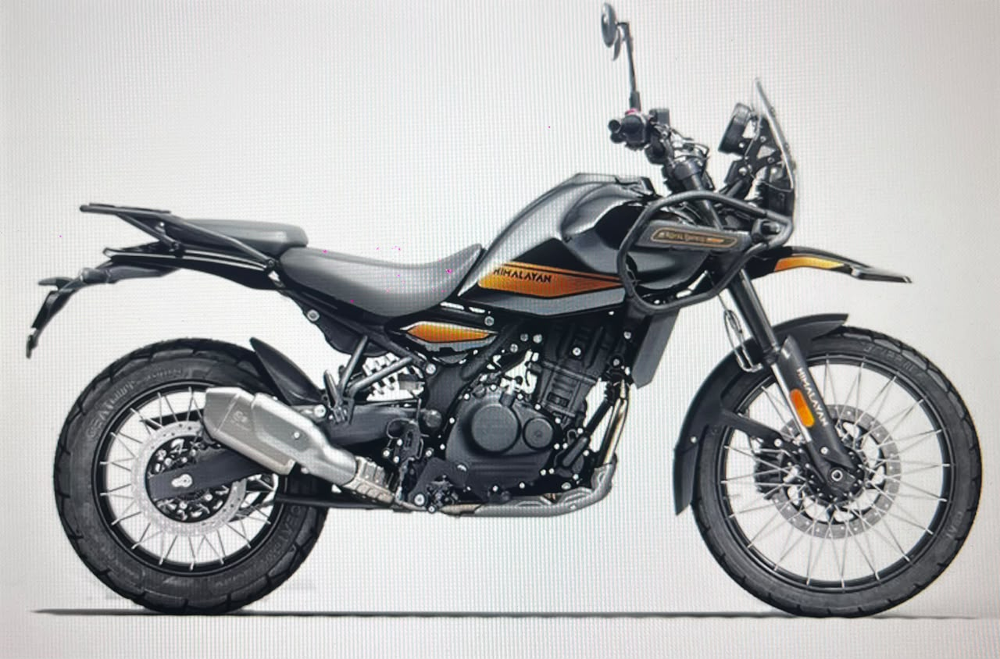
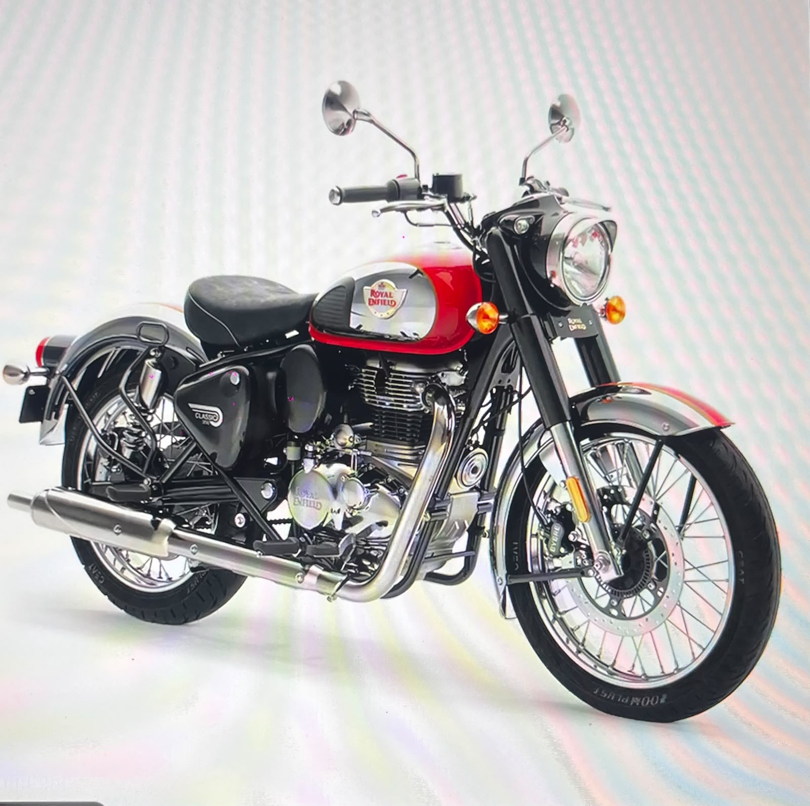
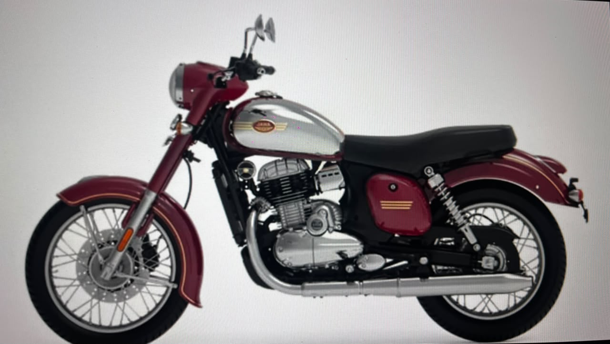

ADVENTURE390
The KTM Adventure 390 is a powerful adventure motorcycle designed for both road and off-road riding. It offers a comfortable upright riding position, strong performance, and excellent handling. It is a good choice for long-distance touring and adventurous journeys.

DUKE390
The KTM Duke 390 is a sporty and aggressive street motorcycle with a powerful single-cylinder engine. It is lightweight, quick, and designed to deliver an exciting riding experience. It is well suited for city riding, highways, and performance enthusiasts.

RC390
The KTM RC 390 is a fully-faired sports motorcycle designed for high-speed and sporty riding. Its aerodynamic body and aggressive riding position provide excellent performance and cornering ability. It is ideal for riders who enjoy fast acceleration and track-inspired riding.

HIMALAYAN
The Royal Enfield Himalayan was originally available with a 411cc engine, making it a popular adventure motorcycle. It is designed for long-distance touring, rough roads, and off-road adventures. Its upright riding position and long-travel suspension provide comfort on challenging terrain.

ROYAL ENFIELD
The Royal Enfield Classic is a retro-style motorcycle known for its timeless design and distinctive character. It provides a relaxed and comfortable riding experience for everyday use and cruising. It is a popular choice for riders who prefer classic styling with modern features.

JAWA
Jawa does not currently have a 400cc motorcycle in its regular lineup, with the Jawa 350 being the closest model. The Jawa 350 combines classic motorcycle styling with modern technology and performance. It is suitable for city riding, cruising, and weekend rides.